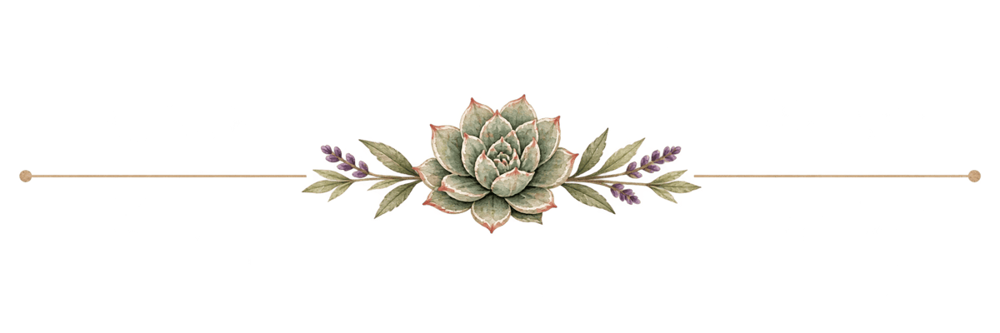

The home page
A creative life,thoughtfully collected.
Being interested in a lot of things is the most consistent thing about me. This is where I keep them.


Latest from the journal


Flip the switch above, everything below re-colours live
This is the real stylesheet with the six ABG board colours dropped into the six roles the design system already defines. Nothing is redrawn; only the tokens change.
Both palettes at once, so the difference does not depend on memory. The swatch strip at the top of each runs forest, action, quiet, reading, ornament, metallic, the six roles in the same order.
The bones are the same: both are a deep green and a warm cream, which is why the two full pages below look more alike than you might expect. Everything that actually changes is an accent, the journal turning from purple to teal is the largest single shift on the site.
Being interested in a lot of things is the most consistent thing about me. This is where I keep them.

Buttons, links, tags
Body copy with an ordinary link in it, then an arrow link →
Numbered steps & stats
Lola, early 2020.
The number keeps climbing.
This table describes ABG light: the palette adopted onto the cream ground the site already has, which is where the darkened values come from. In ABG dark the board colours are used at their stated values, because the dark ground is what they were drawn for.
| Role in the system | Today | ABG | Note |
|---|---|---|---|
| Text, primary button | #2E3D2F |
#243E36 Deep Garden Green |
Near-identical. Straight swap. |
| A place to go: links, arrows, buttons | #C8644A |
#D15757 Terra Cotta |
Board value #D97474 darkened to hold the site's existing contrast. |
| Something to read: the journal | #8D79A6 |
#5B8781 Agave Blue |
Board value #7CA7A1 darkened. Blue, not pink, see below. |
| Ornament: hairlines, dashes, hero band | #D8CFE5 |
#D1E0DE Agave tint |
A tint of the reading colour, as lavender is today. |
| Page ground | #F7F3EB |
#F5EFE3 Warm Cream |
A half-step warmer. Barely perceptible. |
| Quiet accent | #A7B897 |
#70866B Aloe Green |
Considerably darker, usable as text, which sage never was. |
| Metallic, divider artwork | #C0A15A |
#F2A65A Aloe Bloom Orange |
Brighter and more orange than the gold it replaces. |
| no existing role | n/a | #D67A9A Cactus Flower Pink |
The one genuinely new colour. Nothing in the system needs it yet. |
| no existing role | n/a | #252925 Charcoal |
A true neutral the current palette lacks. |
Every piece of artwork on the site, the hero, the five section cards, the sprigs, the dividers, is painted in sage, lavender and the old terracotta. Toggle back and forth and watch the art: the interface changes and the pictures do not. ABG's agave blue and cactus pink appear nowhere in them. A palette swap is a day; repainting sixty-odd illustrations to match is the actual project.
Amethyst means “something to read” across the whole site, the journal strip, post cards, the Books card, even a button variant. ABG offers two candidates. I used Agave Blue rather than Cactus Flower Pink, because pink sits beside Terra Cotta on the wheel and the reading/action distinction would go muddy exactly where it matters most. Blue against terracotta stays unmistakable. It does make the site cooler and less romantic.
On Warm Cream, Terra Cotta manages 2.74:1, Agave Blue 2.32:1 and Aloe Bloom Orange
1.77:1, all failing, all worse than the site has now. On ABG's own
#243E36 ground the same three read 3.69, 4.35 and 5.71. Nothing was wrong
with the palette; the light preview was simply testing it against a background it was
never drawn for. Only Aloe Green inverts, fine on cream at 3.45, failing on the dark
at 2.92.
justamanda.net has a single --ink because it has a single ground. The app
has --on-ground and --on-panel because it has two: cream
type on the green field, charcoal type on the cream panels. Adopting the dark scheme is
therefore not a token swap at all, it means splitting the ink token in two and auditing
every place the stylesheet says var(--ink). The same split hits the primary
button, which inverts to cream on the dark field and must invert back inside a panel.
Every image on the site carries real transparency (a tRNS chunk, checked,
all of them), so the watercolours sit on the green field without a white box around them,
and they look better there than on cream. But the wordmark and the round badge are
Deep Garden Green artwork: on a Deep Garden Green ground they vanish. Rather than
recut both in cream, the masthead and footer here stay on the panel colour, which
costs nothing, keeps the art as drawn, and gives the page a structure of its own:
light chrome, dark field, light chrome.
Most of the stylesheet reads var(--terracotta) and follows a token change for
free. But 31 places across 25 distinct literals hardcode a brand colour as an
rgba(), every hover tint, the card top bar, the tags, the hero band, the
section hairline. A token swap alone leaves all of them the old colour. The override block
at the top of this file is that work, done; it is the honest price of the migration.
The stylesheet's own opening comment says the garden app's palette is “deliberately NOT” this one, a dark tool for working in versus a light space for reading. ABG is the collection's identity; justamanda.net is yours, and books, chickens and crochet live here too. Adopting it makes the whole site read as an annex of the garden.